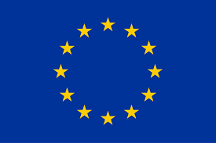

AVRUPA BİRLİĞİ ÜLKELERİ VE KISA BİLGİLER 
| ÜLKE ADI | NÜFUSU | KONUŞULAN DİL | AÇIKLAMALAR |
|---|---|---|---|
| Almanya | 123.345 | Almanca | Çok sayıda ülke vatandaşıın iltica ettiği büyük bir ülkedir. Avrupa Birliğinin lokomotifi olarak adlandırılmaktadır. Yıllardır Türklerin yoğun şekilde tercih ettiği bir ülkedir. Almanya'ya yerleşen Türkler 2'nci hatta 3'ncü nesil olarak burada hayatlarını sürdürmektedir. Ülkede çok sayıda Türk esnafı mevcuttur. Bunun yanında gerek özel sektörde gerekse kamuda çok sayıda Türk çalışmaktadır. Spor, müzik, bilim ve daha bir çok alanda buraya yerleşmiş Türklerin başarıları şahit olunmaktadır. Almanya bir federal parlamenter cumhuriyettir. On altı eyaletten oluşmaktadır (Almanca: Bundesländer). Başkenti ve en büyük şehri Berlin'dir. Almanya Birleşmiş Milletler'e, NATO'ya, G8'e üyedir ve Kyoto Protokolünü imzalamıştır. Almanya 2007 yılına göre, GSYİH'ye göre dünyanın 3. büyük ekonomisidir. Ülke dünyada gelişme için en çok bağışta bulunan ikinci ülke konumundadır. Buna karşın ülke, askeri harcama bütçesi olarak 6. sıradadır. Ülke, sosyal güvenlik sistemiyle yüksek yaşam seviyesine sahiptir. Almanya, Avrupa meselelerinde yüksek ülke nüfusu ve ekonomik gelişmişliğiyle dünya seviyesinde kilit rol oynamaktadır. Almanya birçok bilim ve teknoloji alanında lider durumda olarak kabul edilmiştir. |
| Danimarka | 5.234 | Danca, İngilizce | Danimarka veya resmî adıyla Danimarka Krallığı, Kuzey Avrupa'da İskandinavya bölgesinde, başkenti Kopenhag olan ülke. Anayasal bir monarşi ile yönetilmekte olan Danimarka'nın, başbakanı Mette Frederiksen'dir. Grönland ve Faroe Adaları, Danimarka'ya bağlı özerk bölgelerdir. Yani iç işlerinde özgür, dış işlerinde ise Danimarka'ya bağlılardır. 1944'e kadar İzlanda'da da, Danimarka'nın egemenliği altındaydı Danimarka'nın büyük bir bölümü Jylland yarımadası üzerindedir. Başkent, Danimarka adalarının en büyüğü olan Sjælland'ın üzerinde kurulmuştur. Sjælland, dar bir boğaz olan Sont Boğazı ile İsveç'ten ayrılır. Ayrıca, (bir köprü ile Jylland'a bağlı olan) Fyn, Lolland, Falster, Langeland ve Baltık Denizi'ndeki Bornholm adaları da Danimarka'ya aittir. Ülkenin güney komşusu Almanya'dır, İsveç doğu komşusudur. Danimarka 1973'ten beri Avrupa Birliği üyesidir. |
| İsveç | 12.453 | İngilizce, İsveçce, Danca, Almanca | Kuzey Avrupa'daki İskandinavya yarımadasında yer alan bir ülkedir. Ülkenin sınır komşuları batı ve kuzeyden Norveç, doğudan ise Finlandiya'dır. İsveç bunun dışında güneyinde yer alan Öresund Köprüsü ile Danimarka'ya bağlıdır. Yaklaşık 450.295 km² olan yüz ölçümüyle İsveç, Avrupa Birliği ülkeleri arasında en büyük üçüncü ülkedir. Ülkenin toplam nüfusu 10,4 milyon olup yoğunluk bakımından 23 insan yaşamaktadır. Ancak nüfus yoğunluğu güneye doğru gidildikçe ivmeli şekilde artar. Ülkedeki halkın %85'i kentlerde yaşar. İsveç'in başkenti aynı zamanda ülkedeki en büyük kent olan Stokholm'dür. Başkentte 1,3 milyonu merkezde olmak üzere 2 milyon insan yaşar. Ülkenin diğer büyük kentleri sırasıyla Göteborg ve Malmö'dür. İsveç, meclis sistemine sahip, meşruti monarşi ile yönetilen bir ülkedir. Ekonomi bakımından gelişmiş bir ülke olan İsveç, The Economist'in Demokrasi İndeksi'ne göre birinci sırada olup Birleşmiş Milletler'in İnsani Gelişme Endeksi'ne göre de yedinci sıradadır. Ülke bunun yanında 1 Ocak 1995 tarihinden beri bir Avrupa Birliği ülkesidir. İsveç, Ortaçağ'dan beri bağımsız ve tek bir ülkedir. Modern merkezi yönetim ise ilk defa 16. yüzyılda Gustav Vasa'nın kral oluşuyla başladı. 17. yüzyılda ülke İsveç İmparatorluğu'nu kurmak adına genişletildi. Ancak İskandinavya dışında fethedilen yerlerin büyük bir kısmı 18. ve 19. yüzyıllarda kaybedildi. İsveç'in bugün Finlandiya'da kalan doğu yarısı 1809'da Rusya tarafından ele geçirildi. İsveç'in yer aldığı son savaş ise 1814 yılında gerçekleşti. Bu savaş, İsveç'in, komşusu Norveç'i tek bir ülke altında birleştirmeye zorlamasıyla baş gösterdi. Kurulan birlik 1905 yılına kadar sürdü. 1814'ten beri İsveç, barış politikası izlemekte ve savaşa dayanmayan bir dış ilişkiler siyaseti gözetmekte, çıkan çoğu savaşta tarafsız kalmaktadır. |
| Norveç | 21.234 | İngilizce, Almanca, Fransızca | Kuzey Avrupa'da bulunan İskandinav Yarımadası'nın batısında bir ülke. Finlandiya, İsveç ve Rusya ile komşu olan ülkenin batıda Atlas Okyanusu'nun bir kolu olan Norveç Denizi'ne kıyısı vardır. Kıyıları binlerce fiyordla çizilmektedir. Anayasal monarşi ile yönetilen ülkenin başkenti Oslo'dur. 385,207 km² alana yayılan Norveç'in, Finlandiya ile 729, İsveç ile 1.619, Rusya ile 167 kilometre sınırı vardır ve 21.925 kilometrelik çok uzun bir sahil şeridi vardır. Norveç Avrupa ortalamasının üstünde yaşam standardına ve ekonomik gelişmişliğe sahip olduğu için Avrupa Birliği'ne girmek istememektedir. Zira, ülke kıyılarındaki petrol rezervlerinin zenginliği[9] ve dünya ve Avrupa balıkçılık sektörünü elinde bulundurması ile tanınmaktadır. Avrupa Birliği'ne olumsuz yaklaşmalarının bir nedeni de balıkçılık sektörünü olumsuz etkileyeceği yönündeki çekinceleridir. Öte yandan; Norveç, İsviçre, İzlanda ve Lihtenştayn ile birlikte EFTA (Avrupa Serbest Dolaşım Örgütü) üyesidir ve bu örgütü terk edip AB'ye geçmeyi istememektedir. Avrupa Birliği'nin ısrarları işe yaramamaktadır. Zira ülkede iki kere referandum yapılmış ikisinde de Avrupa Birliği'ne red çıkmıştır. Bugünlerde yapılan anketlerde AB'yi isteyenlerin oranı %50 civarındadır. Norveç ayrıca bir NATO ülkesidir. Kuzey kutbunda Rusya ile ABD arasında dengeleyici role sahiptir. Norveç'in en önemli sorunu azalan ve yaşlanan nüfus sorunudur. Ülkede yaşayan insanların sayısı beş milyon civarındadır ve işgücü eksikliği çekmektedir. Öte yandan Avrupa'nın en pahalı ülkesidir. |
| Fransa | 42.453 | Fransızca, İngilizce, Almanca | Fransa ya da resmî adıyla Fransız Cumhuriyeti, ana kara toprakları Batı Avrupa'da bulunan ve dünyanın pek çok bölgesinde denizaşırı toprakları olan bir ülkedir. Kıta Fransası, güneyde Akdeniz'den kuzeyde Manş Denizi ve Kuzey Denizi'ne, doğuda Ren Nehri'nden batıda Atlas Okyanusu'na kadar yayılan topraklarda yer alır. Fransızlar, ülkelerini topraklarının biçiminden ötürü Altıgen (Fransızca: L'Héxagone, okunuşu: "l'e-gza-gon") olarak adlandırırlar. Fransa, yönetimde yarı-başkanlık sisteminin uygulandığı üniter bir devlettir. Ülkenin başlıca ilke ve ülküleri İnsan ve Yurttaş Hakları Bildirisi'nde açıklanmıştır. Fransa'nın Avrupa kıtasındaki komşuları Belçika, Lüksemburg, Almanya, İsviçre, İtalya, İspanya, Monako ve Andorra'dır. Akdeniz'de İtalya'ya ait Sardinya Adası'ndan sadece 12 km uzaktaki Korsika adası da Fransa'ya aittir. Sahip olduğu denizaşırı illerde de, Fransız Guyanası aracılığıyla Brezilya ve Surinam'a, Saint Martin Adası aracılığıyla da Hollanda Antilleri'ne sınırı vardır. Fransa, Manş Denizi'nde deniz yüzeyinin altından geçen Manş Tüneli'yle Birleşik Krallık'a bağlanmaktadır. Fransa, 17. yüzyılın ikinci yarısından bu yana dünya genelinde uluslararası ilişkiler alanında önde gelen ülkelerden olmuştur. 18. ve 19. yüzyıllar arasında, Fransa dönemin en büyük sömürge imparatorluklarından birini kurmuştur. Bu dönemlerde Fransa'nın sınırları Batı Afrika'dan, Güneydoğu Asya'ya kadar uzanmış, etki ettiği bölgelerdeki toplumların kültür ve siyasetlerinde belirgin izler bırakmıştır. Dünya sıralamasında 6. sırada bulunan nominal gayrisafi yurt içi hasılası ve 8. sırada yer alan satın alma gücü paritesi ile ileri bir ekonomiye sahiptir ve gelişmiş ülkeler sınıfında yer almaktadır. İş gezileri için gelenler dâhil, ülkede yirmi dört saatten az kalanlar hariç tutulmak üzere, yıllık olarak ağırladığı yaklaşık 82 milyon turistle Fransa, dünyada en çok ziyaret edilen ülkedir. Fransa, Avrupa Birliği adlı siyasi ve ekonomik örgütlenmenin kurucu üyelerinden biridir ve birlik üyesi ülkeler içinde yüz ölçümü en büyük olanıdır. Ülke, bunun yanında Birleşmiş Milletler'in de kurucu üyelerinden, Frankofon'un, G8 Zirveleri'nin, Latin Birliği'nin ve NATO'nun da katılımcılarındandır. Birleşmiş Milletler Güvenlik Konseyi'nin beş daimi üyesinden biridir. 360 etkin savaş başlığı ve 59 nükleer santraliyle önemli bir nükleer güçtür. |
| İtalya | 24.987 | İtalyanca, Fransızca, İngilizce | İtalyan Cumhuriyeti (İtalyanca: Repubblica Italiana) ya da bazen İtalya Cumhuriyeti, Güney Avrupa'da, büyük ölçüde İtalya Yarımadası üzerinde yer alan bir ülke. Akdeniz'in en büyük iki adası Sicilya ve Sardinya da İtalyan topraklarıdır. Kuzeyde Alpler bölgesinde Fransa, İsviçre, Avusturya ve Slovenya'yla kara sınırı vardır. Bağımsız iki Avrupa ülkesi olan Vatikan ve San Marino da İtalya'nın yarımadadaki toprakları içine sıkışmış anklav (bir başka ülkeyle tümüyle kuşatılmış) ülkelerdir. Campione d'Italia bölgesiyse İtalya'nın İsviçre içinde kalan bir eksklavıdır (ana topraklardan ayrı mülkiyet). Yüzyıllar boyunca çok çeşitli Avrupa uygarlıklarına ev sahipliği yapmıştır. Etrüskler ve Antik Romalıların İtalya topraklarını kendilerine yurt edinmelerinin yanı sıra, Rönesans hareketi de İtalya'nın Toskana bölgesinde doğmuş ve tüm Avrupa'ya buradan yayılmıştır. İtalya'nın başkenti Roma, yüzyıllar boyunca Batı uygarlığının merkezi olmuş, mimaride barok üslûbunun doğuşuna tanıklık etmiş ve eskiden beri Katolik Kilisesi'nin merkezi olmuştur. Günümüzde İtalya, demokrasi ile yönetilmekte olan bir cumhuriyettir ve ülkelerin kişi başına nominal gayrisafi yurt içi hasıla sıralamasında yirminci, insanî gelişme endeksi sıralamasında yirminci, yaşam kalitesi endeksinde sekizinci sırada yer alan gelişmiş bir ülkedir. İtalya, 1957 yılında başkent Roma'da imzalanan Roma Antlaşması'yla kurulan Avrupa Birliği adlı siyasi ve ekonomik örgütlenmenin kurucu üyelerindendir. Yedinci en büyük gayri safi yurt içi hasılasıyla G8 Zirveleri'nin, NATO'nun, Ekonomik Kalkınma ve İşbirliği Örgütü'nün, Avrupa Konseyi'nin, Batı Avrupa Birliği'nin ve Schengen Antlaşması'nın da katılımcılarındandır. 1 Ocak 2007 tarihinde sürekli üye sıfatı olmaksızın Birleşmiş Milletler Güvenlik Konseyi'nde iki yıllık sürecek üyelik dönemine başlamıştır. |